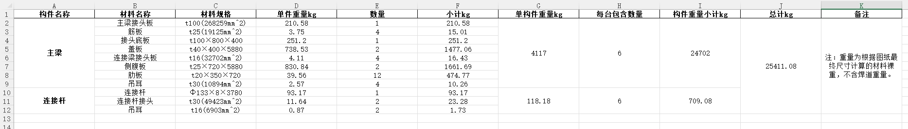

使用说明 - 构件重量统计
使用方法
- 打开主页，会显示上传 Excel 文件的表单。
- 上传文件
data.xlsx，运行计算，返回生成的result_data.xlsx作为下载文件。
data.xlsx文件格式
| name | mat | num |
|---|---|---|
| 构件名称 | CAT | 每个设备包含数量 |
| 材料名称 | 材料规格 | 数量 |
也就是说，在同一列中同时存在分类名称以及分类下的明细，依靠mat判断，mat为CAT的即为分类名称，其后面的明细都是这个分类下的，直到遇到下一个分类名称。
num栏也是根据这一行的属性来判断是明细的数量还是总的构件的数量。
输入样例：

输出样例图：
mat定义规则
★板材
- PL-板厚-长-宽
例：PL-20-200-200，表示厚度20mm，长200mm，宽200mm的矩形板材 - PL-板厚-D-直径
例：PL-20-D-200,表示厚度20mm，直径200mm的圆形板材。 - PL-板厚-D-外径-d-内径
例：PL-20-D-200-d-50,表示厚度20mm，外径200mm，内径50mm的圆环板材。 - PL-板厚-A-面积
例：PL-20-A-20000,表示厚度20mm，面积20000mm2的不规则形状板材。
★管材
- PIP-管径-壁厚-长度
例：PIP-133-8-2000,表示管径133mm，壁厚8mm，长度2000mm的圆管。
★槽钢
- CHAN-型号-长度
包括型号(字母小写)：
5, 6.3, 8, 10, 12.6, 14a, 14b, 16a, 16b, 18a, 18b, 20a, 20b, 22a, 22b, 25a, 25b, 25c, 28a, 28b, 28c, 32a, 32b, 32c, 36a, 36b, 36c, 40a, 40b, 40c
例：CHAN-16b-2000,表示型号为16b的槽钢，长度2000mm。
★等边角钢
- L-边长-厚度-长度
例：L-50-5-1000，表示边长50mm厚度5mm长度1000mm的等边角钢。
★不等边角钢
- LB-长边长-短边长-厚度-长度
例：LB-100-63-6-1000，表示长边100mm短边63mm厚度6mm长度1000mm的不等边角钢。
★H型钢
- H-翼缘高-宽-腹板厚度-翼缘板厚-长度
例：H-300-300-10-15-2000，表示规格是H300x300x10x15长度2000mm的H型钢。
★方管
- ST-边长-壁厚-长度
例：ST-100-10-2000，表示边长100mm壁厚10mm长度2000mm的方管。
★扁方管
- FST-长边长-短边长-壁厚-长度
例：FST-120-60-6-1000，表示长边120mm短边60mm壁厚6mm长度1000mm的扁方管。
★棒料
- ROD-直径-长度
例：ROD-40-2000，表示直径40mm长度2000mm的棒料。
★预埋件用的螺纹钢
- LWG-直径-长度
例：LWG-28-550,表示直径28mm长度550mm的螺纹钢。
★圆钢筋
- YG-直径-长度
例：YG-10-300,表示直径10mm长度300mm的圆钢筋。
★钢丝网
- GSW-面积
例：GSW-30000,表示30000mm2的钢丝网。